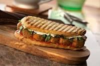
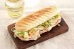
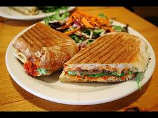
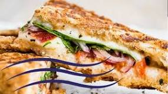

Aunque la primera referencia en Estados Unidos de un panini data de 1956
Aprendisaje
Saber lo que es el panini su historia,tipos de paninis y lo principal que es la elaboracion y el procedimiento de los paninis en una receta que contiene los ingredientes y su modo de praparacion.
Invstigacion realizada por:
EL EQUIPO UWUR
Receta
AGAMOSLO!!
1 pan para sándwich submarino (6 pulgs.)
1 cucharada de mayonesa
2 rebanadas de pavo de la combinación clásica de carnes frías
1 rebanada de jamón de la combinación clásica de carnes frías
1 rebanada fina de queso mozzarella
2 rebanadas finas de tomates (jitomates)
1/2 taza de lechuga troceada
1 cucharada de vinagreta italiana preparada con aceite de oliva extravirgen
1/4 cucharadita de hojas secas de orégano
¿Como prepararlos?
Calienta la prensa de panini rociada con aceite.
Corta el pan submarino horizontalmente por la mitad. Ahueca un poco las mitades del pan; desecha los pedazos de pan o resérvalos para otro uso.
Úntale la mayonesa a la mitad del pan de abajo. Ponle los demás ingredientes. Cúbrelos con la parte superior del pan
Asa el panini de 2 a 3 min. o hasta que esté bien doradito.
.
Otros tipos de Panini
They are nice & friendly

PANINI DE PAVO
ESPECIAL DE E.U

PANINI DE JAMON
Owner & Manager

PANINI DE TRES QUESOS
Pizza Specialist
HISTORIA DEL PANINI
¿PANINI O PANOCHOTE?
EL PANINI
Aunque la primera referencia en Estados Unidos de un panini data de 1956 y aparece en un libro de cocina italiana del siglo XVI, los sándwiches se volvieron populares en los bares de Milán, llamados paninoteche (paninotecas), en los años 1970 y 1980. Los restaurantes estadounidenses de moda, especialmente los de Nueva York, comenzaron a vender panini, y su popularidad se extendió a otras ciudades, cada una produciendo variaciones distintivas del mismo.1 Durante la década de 1980, el término paninaro (nombre coloquial para un fabricante y vendedor de panini, o para su tienda), se extendió también a los consumidores.
.

CONCLUCION
Los paninis son un estilo de sanwichque aparece en un libro de cocina italiana del siglo XVI, y quien lo elabora era llamado PANINARIO.
¡¡PROPOCITO!!
EL PROPOCITO ES DAR A CONOCER A EL USUARIO TODO HACERCA DE EL PANINI SU PERPARACION,HISTORIA Y TIPOS DE PANINIS Y LO MAS IMPORTANTE COMO PREPARARLOS.
Aprendisaje
Saber lo que es el panini su historia,tipos de paninis y lo principal que es la elaboracion y el procedimiento de los paninis,los ingredientes y su modo de praparacion.